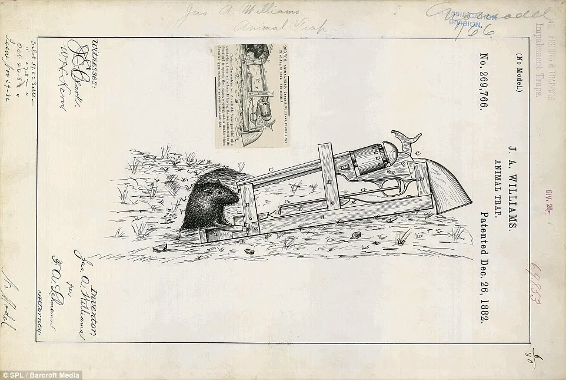
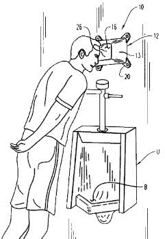
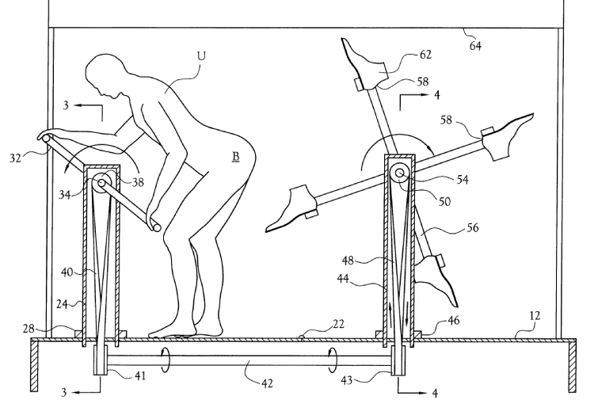

"Djurfälla" - December 1882, James Williams.
Med den här musfällan behöver man inte oroa sig för om musen dog eller inte. Om du vaknar på natten av ett pang! så vet du både att musen är död, och att det finns nu ett nyt hål i golvet. Se till att inte råka trampa på fällan själv om du vill ha kvar alla dina tår.

"Pannstödsapparat" - Januari 2004, Eric D.Page
Har du någonsin varait så trött när du kissar att du vill luta dig mot något? Då är det har just för dig! Bara luta dig fram och vila ditt huvud mot pannstödet, så länge du är okej med idén att ha huvudet mot något som en massa andras svetia pannor har varait mot så kan det här vara ganska pratiskt, bara så länge du inte är så trött att du somnar.

"Användarstyrd nöjesapparat för att sparka användarens skinkor" - September 2001, Joe Armstrong
Har du någonsin villat få en spark i röven? Eller se någon annan få det? Med det här kan man det! Man bara vrider på veven och så blir man en fot upp i röven.

"Gungande eller svängande badkar" - Februari 1900, Otto Hensel
För den som vill ha en gungstol och ett badkar samtidigt. Men se till att först sätta på förklädet, annars så spiller man vatten över hela golvet.

"Dubbelcykel för looping" - Maj 1906, Karl Lange
Trots att det var bara gjord för cirkusartister kan man fortfarande nå nytta av det här, så länge det finns en loop mitt i cykelbanan.
Patent fårn 1995. Har du någonsin brågat med dina kompisar om vem som har bäst balence? Nu kan du det med den har bär bara mag bräden, mer plats för saker medan du vissar din prefeckta balence och aexle struga till dina pålare. Se till att du inte råkar bya på dig när du har någtin på. Gör inte dinna axlar heller!

Har du någonsin tänkt att processen av att ge nyt liv (födda barn) tar för lång tid? Varför inte opetmera straten! Det har tycke Charllte och Groeg blankly. Knyt fast mamman på mahien och låt en skujsötiska snurra henne tills babasin skujts ut! (Kommer med ett för att fånga barnet).